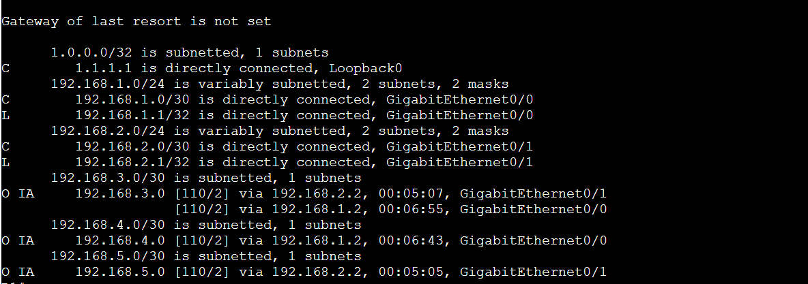
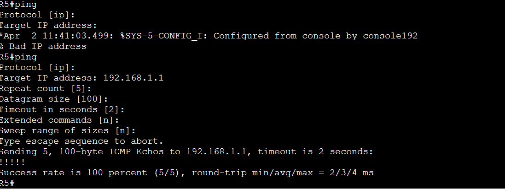
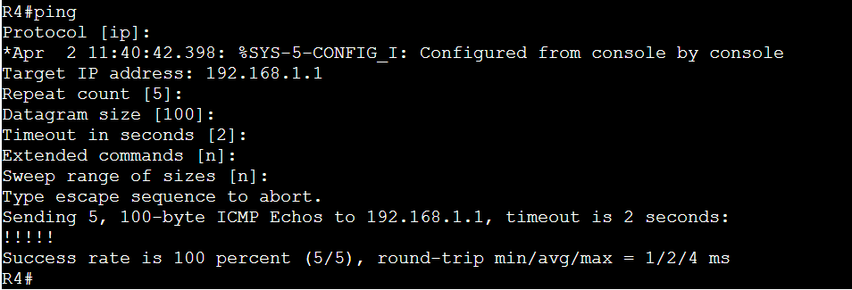

Objective
Build and verify hierarchical OSPF beyond a single area.
I used five IOSv routers to connect areas 0, 10, and 20. R2 links the backbone to areas 10 and 20; R3 links the backbone to area 20. Interface-specific OSPF configuration and explicit router IDs make the area boundaries and router identities deterministic.
| R1 | Backbone router in area 0 |
|---|---|
| R2 | ABR connecting areas 0, 10, and 20 |
| R3 | ABR connecting areas 0 and 20 |
| R4 / R5 | Internal routers in areas 10 and 20 respectively |
| Addressing | Five /30 transit networks; router IDs 1.1.1.1 through 5.5.5.5 |

Key evidence
Read the route, not just the ping result.
R1's routing table marks remote transit networks O IA, identifying them as inter-area routes learned through ABRs. The 192.168.3.0/30 prefix appears through both R2 and R3 with equal cost, making the two available next hops visible in one output.
- 192.168.3.0/30: O IA through both R2 and R3.
- 192.168.4.0/30: O IA through R2.
- 192.168.5.0/30: O IA through R3.



Operational interpretation
ABRs make the hierarchy visible in the routing table.
The O IA code distinguishes inter-area reachability from routes originating inside R1's own area. Successful pings from both non-backbone areas then provide a separate data-plane check toward the backbone.
The documented neighbor adjacencies are R1–R2 and R1–R3 in area 0, R2–R3 in area 20, R2–R4 in area 10, and R3–R5 in area 20. The restored evidence includes route and ping screenshots; it does not include the original neighbor-log capture.
Build note and next steps
R2's loopback mask was entered as /30 while the other loopbacks use /32. An explicit router ID of 2.2.2.2 kept its OSPF identity stable. That mismatch is retained as an implementation note rather than hidden.
This build does not implement summarization, stub or NSSA areas, filtering, or virtual links. Those are separate exercises.